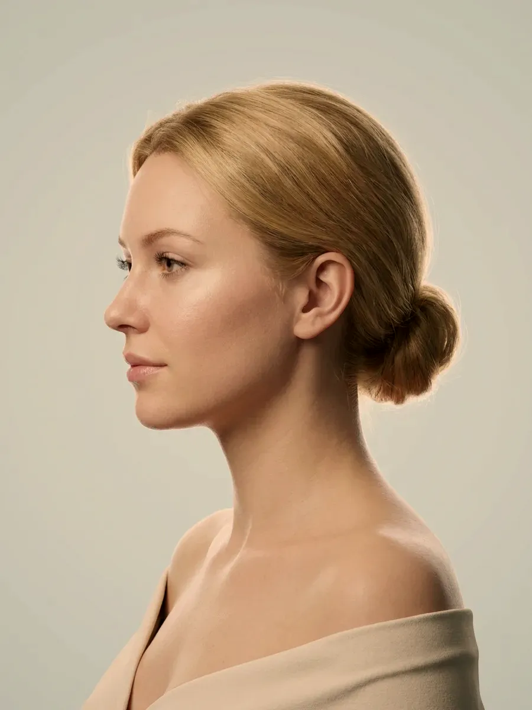

Bölgeler · Bölgeye göre planlama
Planı işlemin adı değil, bölgenin kendisi belirler.
Göz altındaki deri ile karındaki doku arasında kalınlık, hareket, çevredeki damar-sinir yapıları ve iyileşme süresi bakımından büyük farklar vardır. Dudakta uygun görülen miktar, derinlik ya da seans aralığı bu yüzden göz çevresine, çene hattına veya karına olduğu gibi taşınamaz. Bu bölümde sekiz bölgenin her biri için ayrı bir sayfa bulacaksınız.

Temsilî görsel · yapay zekâ ile üretildiBölgeler
Merak ettiğiniz bölge hangisi?
Her bölge sayfasında aynı sırayı izledik: önce o bölgenin anatomisi, ardından yakınmaların hangi süreçten doğduğu, sonra konuşulabilecek uygulamalar ve son olarak işlem yapılmayan durumlar.
Yüz
Alın, elmacık ve çene hattı birbirine yaslanır. Bir noktaya verilen destek komşusunun görünüşünü de değiştirdiği için yüz, parçalara bölünmeden tek plan olarak ele alınır.
İnceleGöz Çevresi
Kaz ayağı çizgilerini, göz altını ve kaşın çevresini kapsar. Derinin en ince olduğu bu alanda küçük bir fark bile göze çarpar; karar başka bölgelerden çok daha temkinli verilir.
İnceleDudak
Dudakta üç ayrı konu vardır: dolgunluk, kenar çizgisinin netliği ve yüzeyin nemi. Çoğu yakınma daha fazla hacimle değil, mevcut oranı koruyarak karşılanır.
İnceleÇene ve Jawline
Kemik desteği, çene altındaki yağ, derinin gerginliği ve çiğneme kası çene hattının netliğini birlikte belirler. Planı, bunlardan hangisinin ağır bastığı yönlendirir.
İnceleSaçlı Deri
Saçlı deride ilk adım bir uygulama değil, dökülmenin nedenini bulmaktır. Demir, tiroid ve kullanılan ilaçlar ilk bakılan konular arasındadır.
İnceleBoyun ve Dekolte
Boyun gün boyu eğilip döner, derisi yüzdekinden incedir ve altında yastık görevi görecek yağ azdır. Yüz için seçilen ayar burada yeniden hesaplanır.
İnceleEl
Deri altı yağı inceldikçe el sırtında damarlar ve tendonlar belirir; aynı deri yılların güneşini de taşır. Hacim ve leke iki ayrı başlık olarak planlanır.
İnceleVücut
Karın, bel, kol ve bacakta yerel yağlanma, selülit görünümü ve dövme silme. Alan geniş, seanslar aralıklıdır; hiçbir uygulama kilo vermenin yerine geçmez.
İnceleSorununuzun nereden kaynaklandığından emin değilseniz cilt sorunları bölümü iyi bir başlangıç noktasıdır. Belirli bir uygulamanın ne olduğunu, taşıdığı riskleri ve sonrasında neler beklendiğini merak ediyorsanız uygulamalar bölümüne geçebilirsiniz. Buradaki sayfalar ise tek bir soruya odaklanır: “Benim bölgemde neler yapılabilir, neler yapılmaz?”
Ölçütler
Bir bölgenin planını hangi dört ölçüt değiştirir?
Her bölgenin planı dört soruya verilen yanıtla şekillenir: deri ne kadar kalın, bölge ne kadar hareketli, çevresinde hangi damar ve sinirler var, iyileşme ne kadar sürer? Yanıtlar farklı yönleri gösterdiğinde plan küçültülür.
Deri kalınlığı ve altındaki destek
İnce bir derinin altına yerleştirilen ürünün dışarıdan seçilmesi ya da parmakla fark edilmesi daha olasıdır. Göz altında ve boyunda miktar bu yüzden en düşük düzeyde tutulur ve katman özenle seçilir. El sırtında deri altı yağın az olması ise ayrıca hesaba katılır.
Hareket yükü ve etkinin süresi
Konuşurken, gülerken ve yemek yerken dokular sürekli yer değiştirir ve ürün bölgeden daha çabuk çekilir. Dudakta etkinin, çene hattı gibi durağan bir alana göre çoğu zaman daha erken azalması bundandır. Kaç ay süreceği önceden söylenemez; kişiden kişiye farklılık gösterir.
Damar ve sinir komşuluğu
Şakakta, burun sırtında, dudak çevresinde ve göz çevresinde atardamarlar deriye oldukça yakın seyreder. Bu alanlarda ürün miktarı küçültülür, farklı bir katmanda çalışılır ve kimi başvurularda işlemden tümüyle vazgeçilir.
İyileşme süresi ve takviminiz
Göz çevresinde morarma ve şişlik bir haftaya kadar uzayabilirken çene hattında çoğunlukla birkaç gün içinde çekilir. Bu yüzden önünüzdeki düğün, sunum ya da seyahat gibi tarihler randevu planına baştan eklenir ve gerekirse işlem ileri bir tarihe alınır.
Yöntem
Aynı adı taşıyan uygulama bölgeden bölgeye neden değişir?
Çene hattına ve göz altına yapılan hyalüronik asit dolgusu aynı adla anılır; oysa seçilen ürünün kıvamı, yerleştirildiği katman, miktarı, iki seans arasındaki süre ve göze alınabilecek risk iki bölgede çok farklıdır. Lazerde de durum değişmez: yüz için seçilen ayar bacağa ya da boyuna olduğu gibi uygulanmaz.
Milimetreden santimetreye: doku farkı
Deri kalınlığı vücutta geniş bir aralıkta değişir: göz altında milimetrenin altında kalırken çene hattında ve el sırtında birkaç kat artar; karında ve uylukta ise altında kalın bir yağ tabakası bulunur. İnce derinin altına konan ürün kolayca görünür ya da hissedilir, kalın bir dokuda aynı miktar fark edilmeyebilir. Tüm bölgeler için tek bir ölçü, teknik ya da aralık bu yüzden kullanılamaz.
Hareket, tekrar sıklığını belirler
Tekrar sıklığını belirleyen başlıca etken, bölgenin gün içindeki hareketidir. Konuşma ve yemek dudağı, göz kırpma göz çevresini durmadan çalıştırır; ürün bu alanlarda daha çabuk azalır. Çene hattında ve el sırtında hareket sınırlı olduğundan aynı ürün daha geç çekilir. “Kaç ayda bir?” sorusuna bu yüzden bölge bölge yanıt verilir.
Kimi alanlarda yanılma payı yok denecek kadar azdır
Göz çevresinde, burun sırtında ve dudak çevresinde atardamarlar deriye çok yaklaşır; bu damarların bir kısmı gözü besleyen dolaşımla da bağlantılıdır. Söz konusu alanlarda en dikkatli teknikle çalışılsa bile göze alınabilecek risk daha küçüktür. En küçük bir kuşku varsa işlem ertelenir ya da hiç yapılmaz.
Süreç
Bölgeye özel muayene hangi adımlardan oluşur?
Görüşme sizin gösterdiğiniz yerden başlar; ardından komşu bölgelere, yüzün ya da vücudun geneline ve sağlık öykünüze geçilir. Hepsi aynı muayenede ele alınır.
- Yakınma ile bölgenin eşleştirilmesi. Gösterdiğiniz yer ile sizi rahatsız eden görünümün kaynağı her zaman aynı olmayabilir; örneğin ağız kenarındaki gölgenin nedeni elmacık hattındaki destek kaybı olabilir. Kaynak belirlenmeden plana geçilmez.
- Bölgenin incelenmesi. Derinin kalınlığına ve esnekliğine, yağın nasıl dağıldığına, kasların ne kadar etkin olduğuna ve iki taraf arasında fark olup olmadığına bakılır; geçmişte hangi işlemin, ne zaman ve ne kadar yapıldığı not edilir.
- Sağlık ve ilaç öyküsü. Kan sulandırıcı kullanıp kullanmadığınız, pıhtılaşma sorunu, kontrol altında olmayan otoimmün bir hastalık, gebelik ya da emzirme, yakın zamanda geçirdiğiniz bir enfeksiyon veya diş tedavisi sorulur; bilinen aşırı duyarlılıklarınızı mutlaka belirtin.
- Seçenekler ve hiç işlem yapmamak. Hangi adımların uygun olabileceği, her birinin nereye kadar katkı sağlayabileceği ve neyin beklenmemesi gerektiği konuşulur; işlem yapılmaması da gerekçesiyle birlikte önünüze konan bir seçenektir.
- Yazılı bilgilendirme ve onam. Amaçlanan etki, görülebilecek istenmeyen durumlar ve böyle bir durumda neler yapılacağı size yazılı olarak verilir. Onamınız alınmadan işleme geçilmez; kontrol tarihini aynı gün birlikte belirleriz.
Uygulama yapılmayan durumlar
- Gebelik ya da emzirme dönemi
- İşlem alanında etkin bir enfeksiyon, açık yara ya da iltihaplı lezyon
- Kullanılacak içeriğe karşı daha önce görülmüş aşırı duyarlılık tepkisi
- Uygulamanın sağlayabileceğini aşan beklentiler
- Muayenehanenin kapsamı dışında kalan istekler
Ertelenen ya da ayrıca planlanan durumlar
- Yeni geçirilmiş bir enfeksiyon, yakın zamanda yapılan aşı ya da diş tedavisi
- Kan sulandırıcı kullanımı ya da pıhtılaşma sorunu
- Kontrol altına alınmamış otoimmün hastalık
- Aynı bölgeye daha önce uygulanmış, içeriği bilinmeyen ürün
- Önemli bir güne yalnızca birkaç gün kalmışken yapılan başvurular
Çoğu işlemden sonra benzer öneriler geçerlidir: ilk günlerde bölgeye bastırmamak ve ovmamak, sıcak ortamlardan ve ağır egzersizden bir süre uzak durmak, güneş koruyucuyu aksatmamak ve kontrol randevusunu kaçırmamak. Her uygulamaya özgü ayrıntıları uygulama sonrası takip sayfasında bulabilirsiniz.
Hangi işlemleri yapmadığımızı ve bu durumda sizi nereye yönlendirdiğimizi ayrı bir sayfada topladık. Sitede neden öncesi–sonrası fotoğrafı ya da hasta yorumu bulunmadığını ise içerik ve görsel yayın ilkelerimiz sayfasında açıklıyoruz.
İşlemden sonra sizi kaygılandıran bir değişiklik olursa ilk adım bizi 0539 933 08 08 numarasından aramaktır. Artarak süren şiddetli ağrı, derinin beyazlaşması ya da morumsu, ağ gibi bir renk alması, görme bulanıklığı, kısa sürede büyüyen bir şişlik ya da ateş gibi bulgularda zaman kaybetmeyin. Telefonla bize ulaşamazsanız 112 Acil Çağrı Merkezi’ni arayın ya da en yakın hastanenin acil birimine başvurun.
Soru–cevap
Aklınızdaki soruyu seçin, yanıtı yanda okuyun
Bölge pusulası
Bir bölgeye dokunun, ayrıntısı karşınıza gelsin
Listeden bir bölge seçtiğinizde görsel ve kısa tarif yenilenir; o bölgeyle ilgili her şey kendi sayfasında sizi bekliyor.

Bir adım ötesi
Planınızı bölgenizden başlayarak kuralım
Dr. Rahmi Cebeci · Cevizlik Mah. Ebuzziya Cad. No:47/1, Bakırköy / İstanbul. Randevu için 0539 933 08 08 numarasını arayabilir, aynı numaraya WhatsApp’tan yazabilir ya da iletişim sayfasındaki formu doldurabilirsiniz.
Metni hazırlayan ve tıbbi açıdan gözden geçiren: Uzm. Dr. Rahmi Cebeci (Aile Hekimliği Uzmanı · Medikal Estetik Sertifikalı).
Buradaki anlatım herkese yöneliktir; size özel bir teşhis ya da tedavi planı sunmaz, muayenenin yerini tutmaz. Her uygulamanın etkisi kişiye göre farklı olur.